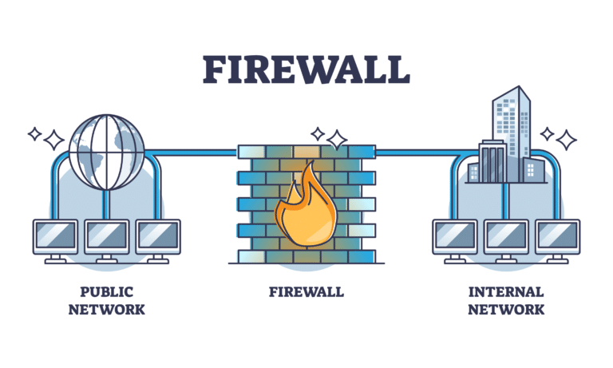
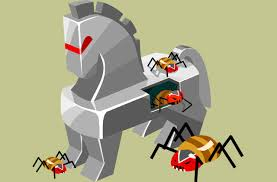
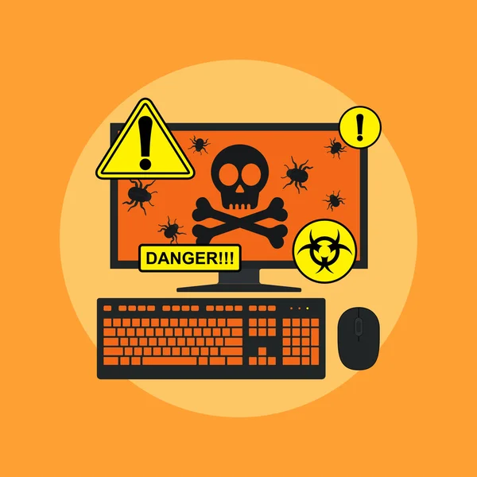
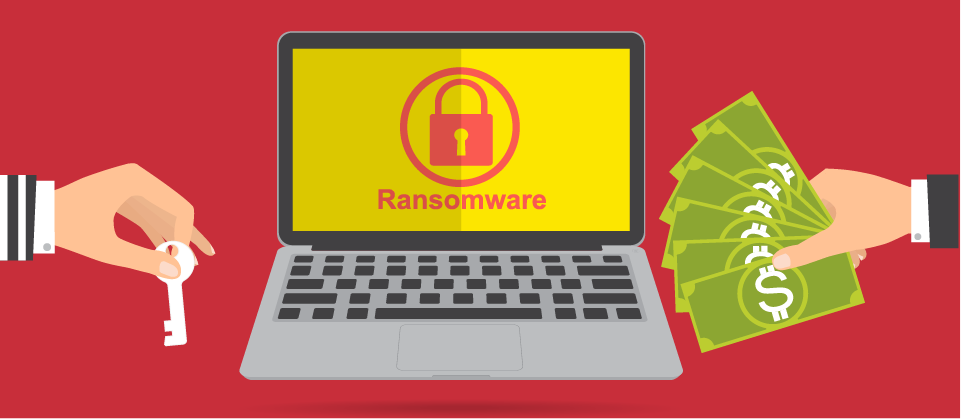
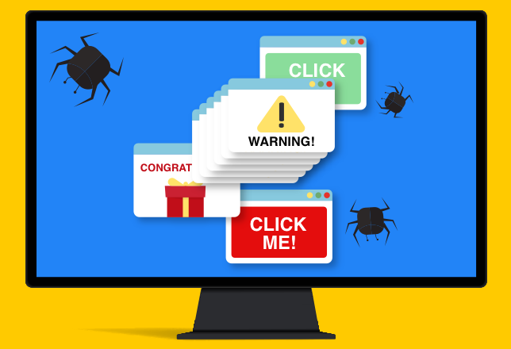
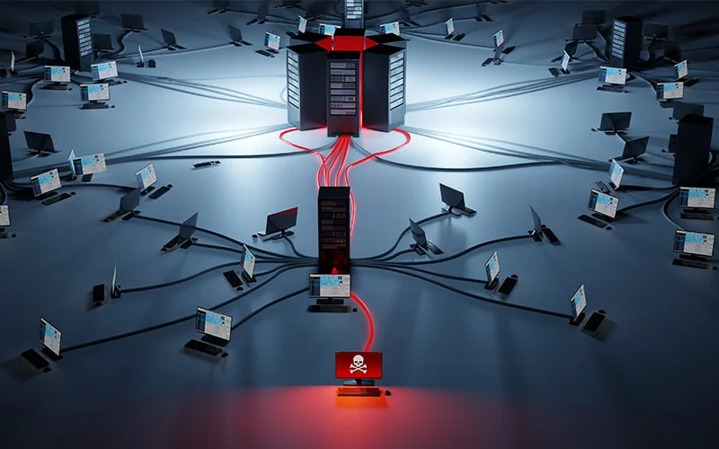
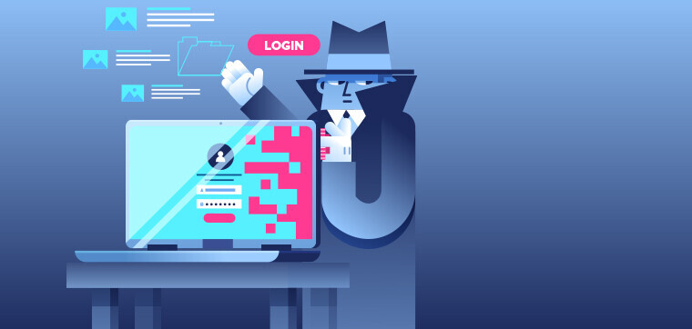
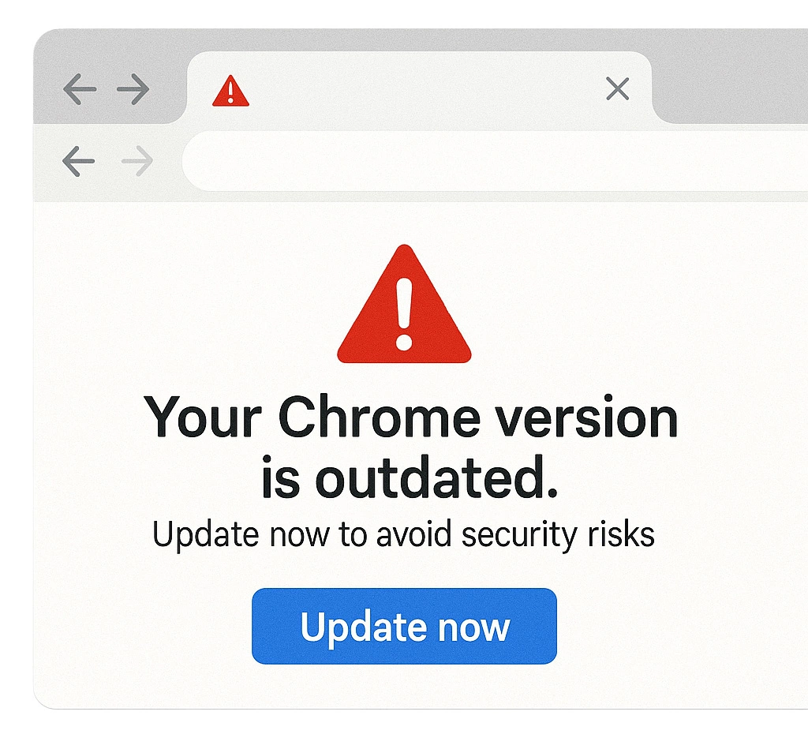
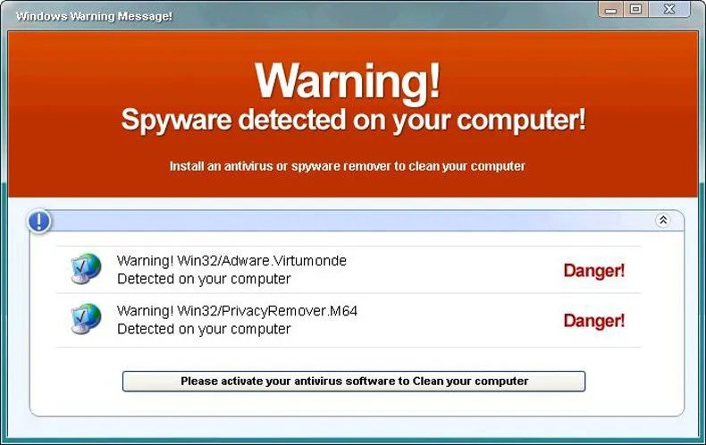

Conceptos Clave
Malware
Es cualquier programa "malo" que se mete en tu equipo sin permiso para espiar, robar datos o dañar el sistema.

Malware: Explicación detallada
El término "malware" proviene de "malicious software" (software malicioso). Incluye cualquier programa diseñado específicamente para infiltrarse, dañar o realizar acciones no autorizadas en un sistema informático sin el consentimiento del usuario. Existen múltiples tipos: virus, gusanos, troyanos, ransomware, spyware, adware, rootkits, etc. El malware puede llegar a través de descargas de sitios web no confiables, archivos adjuntos de correos electrónicos engañosos, o dispositivos USB infectados.
Una vez dentro, el malware puede robar información personal, cifrar archivos para pedir rescate, registrar pulsaciones de teclado (keyloggers), mostrar publicidad no deseada o incluso convertir el equipo en parte de una botnet para atacar a otros. Para protegerse, es fundamental mantener actualizados el sistema operativo y el antivirus, evitar hacer clic en enlaces sospechosos y descargar solo de fuentes oficiales.
Phishing
Es una técnica de engaño donde se hacen pasar por bancos o redes sociales para robarte las claves y tu dinero.
Phishing: Explicación detallada
El phishing es un tipo de ciberataque basado en la ingeniería social. Los atacantes suplantan la identidad de una entidad legítima (banco, red social, empresa de mensajería) y envían mensajes masivos (correo, SMS, WhatsApp) que contienen un enlace a una página web falsa, casi idéntica a la original. Cuando la víctima introduce sus credenciales, estas son enviadas directamente a los delincuentes.
Las señales de un intento de phishing incluyen: errores ortográficos, direcciones de correo extrañas, mensajes que generan urgencia ("su cuenta será cerrada en 24 horas"), o enlaces que no coinciden con el dominio oficial. Para protegerse, nunca se debe hacer clic en enlaces sospechosos. Es recomendable escribir manualmente la dirección del sitio en el navegador y verificar que el candado de seguridad (https) esté presente. Además, activar la autenticación de dos factores añade una capa extra de protección.
Pharming
Redirige tu navegador a sitios web falsos aunque escribas la dirección correcta.
Pharming: Explicación detallada
El pharming es más peligroso que el phishing porque no requiere que el usuario haga clic en un enlace malicioso. En este ataque, los ciberdelincuentes manipulan el sistema de resolución de nombres de dominio (DNS) o infectan el archivo "hosts" del equipo. Así, cuando la víctima escribe la dirección correcta de un banco, el navegador es llevado a un sitio falso sin que ella lo note. La página falsa puede ser idéntica a la real y robar las credenciales ingresadas.
Para prevenir el pharming, es importante usar servidores DNS confiables (como los de Google 8.8.8.8 o Cloudflare 1.1.1.1), mantener actualizado el sistema operativo y el antivirus, y verificar siempre que la dirección web comience con "https://" y que el certificado de seguridad sea válido. También se puede instalar extensiones del navegador que alertan sobre sitios sospechosos.
Ciberseguridad
Es la protección de computadoras, redes y datos contra ataques digitales o accesos no autorizados.
Ciberseguridad: Explicación detallada
La ciberseguridad es el conjunto de prácticas, procesos y tecnologías diseñadas para proteger sistemas informáticos, redes, dispositivos y datos de ataques, daños o accesos no autorizados. Abarca desde la seguridad de la información (confidencialidad, integridad y disponibilidad) hasta la protección de infraestructuras críticas. Incluye medidas como firewalls, antivirus, cifrado, autenticación multifactor, copias de seguridad y políticas de seguridad para usuarios.
En un mundo cada vez más conectado, la ciberseguridad es esencial tanto para empresas como para particulares. Un fallo en esta área puede derivar en robo de identidad, pérdida económica, daño a la reputación o incluso afectar servicios esenciales. La educación y la concienciación de los usuarios son componentes fundamentales, ya que la mayoría de los incidentes de seguridad involucran algún error humano.
Ciberdelincuente
Persona que comete delitos utilizando internet y la tecnología, como robar información o dinero en línea.

Ciberdelincuente: Explicación detallada
Un ciberdelincuente es un individuo o grupo que utiliza tecnologías de la información para cometer actos ilegales. Estos delitos pueden ser contra personas (robo de identidad, fraudes), contra empresas (extorsión, espionaje industrial) o contra gobiernos (ciberterrorismo). Los ciberdelincuentes pueden actuar de forma individual (hackers con fines económicos o ideológicos) o formar parte de organizaciones criminales sofisticadas.
Entre sus técnicas más habituales están el phishing, la distribución de malware, los ataques de ransomware, la suplantación de identidad y la explotación de vulnerabilidades de software. Las motivaciones van desde el beneficio económico hasta el activismo político o el simple vandalismo. Para combatirlos, las fuerzas de seguridad y las empresas de ciberseguridad trabajan en la identificación, seguimiento y desmantelamiento de sus infraestructuras, pero la prevención y la educación del usuario siguen siendo la mejor defensa.
Firewall
Es como una pared de seguridad que revisa quién intenta entrar a tu internet y bloquea a los sospechosos.

Firewall: Explicación detallada
Un firewall (cortafuegos) es un sistema de seguridad que monitorea y controla el tráfico de red entrante y saliente basándose en reglas predefinidas. Actúa como una barrera entre una red interna confiable (como tu hogar u oficina) y redes no confiables (como Internet). Puede ser hardware (un dispositivo físico) o software (programa instalado en el dispositivo).
El firewall analiza los paquetes de datos y permite o bloquea su paso según criterios como dirección IP, puerto o protocolo. Por ejemplo, puede impedir que un programa malicioso envíe información sensible desde tu computadora a un servidor externo sin tu permiso. En los sistemas operativos modernos (Windows, macOS, Linux) ya vienen incluidos firewalls básicos, pero es importante configurarlos correctamente y no desactivarlos.
Malwares y Amenazas Comunes
Virus
Tipo de malware que se adjunta a programas legítimos y se propaga para dañar archivos y sistemas.
Virus: Explicación detallada
Un virus informático es un programa malicioso que se replica a sí mismo insertando copias de su código en otros archivos ejecutables o documentos. Para activarse, normalmente necesita que el usuario ejecute el programa infectado. Una vez activo, puede dañar archivos, corromper datos, ralentizar el sistema o incluso borrar información. Los virus se propagan a través de dispositivos USB, descargas de internet o archivos adjuntos de correo.
Es importante no confundir virus con malware: los virus son solo una categoría dentro del malware. El uso de un antivirus actualizado y la precaución al abrir archivos desconocidos son las principales defensas contra los virus.
Troyano
Parece un programa normal, pero por dentro trae un virus escondido para controlar tu equipo.

Troyano: Explicación detallada
Un troyano (o caballo de Troya) es un tipo de malware que se disfraza de software legítimo para engañar al usuario y que lo instale voluntariamente. A diferencia de los virus, no se replica por sí mismo, pero puede abrir puertas traseras para que el atacante controle el equipo, robe información o descargue otras amenazas. Los troyanos suelen llegar en descargas de programas "crackeados", juegos gratuitos o adjuntos de correo engañosos. Una vez activos, pueden robar contraseñas, capturar pulsaciones de teclado o convertir el PC en un zombie para ataques DDoS.
Gusano
Se mueve solo por el Wi-Fi de la casa, saltando de un teléfono a otro infectando todo.

Gusano: Explicación detallada
Un gusano es un malware que se propaga automáticamente a través de redes sin necesidad de intervención del usuario. Explota vulnerabilidades de seguridad para copiarse a otros equipos conectados (por ejemplo, por Wi-Fi o correo electrónico). A diferencia de los virus, no requiere adjuntarse a un programa anfitrión. Los gusanos pueden consumir ancho de banda, saturar redes y provocar caídas del sistema. Para prevenirlos, es esencial mantener actualizados el sistema operativo y las aplicaciones, así como usar un firewall robusto.
Ransomware
Te bloquea tus archivos con un candado y te pide dinero para poder abrirlos otra vez.

Ransomware: Explicación detallada
El ransomware es un tipo de malware que cifra los archivos de la víctima y exige un rescate económico (normalmente en criptomonedas) a cambio de la clave de descifrado. Puede paralizar empresas, hospitales y particulares. La mejor defensa es realizar copias de seguridad periódicas almacenadas en un lugar seguro y actualizar el software para evitar las vulnerabilidades que explotan. Nunca se recomienda pagar el rescate, ya que no garantiza la recuperación y fomenta más ataques.
Spyware
Es un programa espía que mira qué páginas ves y qué escribes sin que te des cuenta.

Spyware: Explicación detallada
El spyware (software espía) recopila información del usuario sin su consentimiento. Puede registrar hábitos de navegación, pulsaciones de teclado (keylogger), contraseñas, correos electrónicos o incluso activar la cámara web. Estos datos se envían a un atacante que puede usarlos para robo de identidad o fraude. El spyware suele instalarse junto con programas gratuitos o a través de vulnerabilidades del navegador. Un antivirus actualizado y la revisión de permisos de las aplicaciones ayudan a detectarlo y eliminarlo.
Adware
Virus fastidioso que llena la pantalla de anuncios y pone el internet súper lento.

Adware: Explicación detallada
El adware es un programa que muestra anuncios no deseados en el navegador, a menudo en forma de ventanas emergentes, banners o redirecciones. Aunque no suele ser tan dañino como otros malwares, resulta molesto y puede ralentizar el sistema. Además, algunos adwares rastrean los hábitos de navegación para dirigir publicidad. Se instala frecuentemente al descargar software gratuito sin leer los acuerdos. Para evitarlo, se recomienda elegir la instalación personalizada y rechazar componentes adicionales, además de usar bloqueadores de anuncios y mantener el antivirus activo.
Botnet
Red de computadoras infectadas que un hacker usa para atacar a otros a control remoto.

Botnet: Explicación detallada
Una botnet es una red de dispositivos infectados (bots o zombies) controlados remotamente por un atacante (botmaster). Estos dispositivos pueden ser ordenadores, móviles o routers. El botmaster utiliza la botnet para lanzar ataques de denegación de servicio distribuido (DDoS), enviar spam masivo, robar datos o minar criptomonedas sin consentimiento. Los dispositivos se infectan mediante malware que los conecta a un servidor de comando y control. Para evitar formar parte de una botnet, hay que mantener el software actualizado, usar contraseñas seguras y tener un buen antivirus.
Rootkit
Malware que se esconde profundamente en el sistema para dar control total al atacante sin ser detectado.

Rootkit: Explicación detallada
Un rootkit es un conjunto de herramientas que permiten el acceso de nivel administrativo (root) a un sistema informático mientras oculta su presencia. Puede modificar el núcleo del sistema operativo, los controladores o las aplicaciones para evadir la detección por parte de antivirus. Los rootkits suelen llegar a través de vulnerabilidades o troyanos, y una vez instalados, el atacante puede ejecutar comandos, robar información o instalar otros malwares. Detectarlos es difícil, y en casos graves puede ser necesario formatear el equipo y reinstalar el sistema desde cero.
Keylogger
Graba cada letra que marcas en el teclado para robar contraseñas del banco.
Keylogger: Explicación detallada
Un keylogger es un tipo de spyware que registra todas las pulsaciones del teclado. Puede ser software (programa oculto) o hardware (dispositivo físico conectado entre el teclado y la computadora). Los keyloggers capturan contraseñas, números de tarjetas de crédito, conversaciones y cualquier texto escrito. Luego envían esos datos al atacante. Para protegerse, se recomienda usar un antivirus actualizado, un administrador de contraseñas que evite teclear manualmente, y revisar periódicamente el sistema en busca de programas sospechosos.
Scareware
Asusta al usuario con falsas alertas de virus para que compre software innecesario o malicioso.

Scareware: Explicación detallada
El scareware es una táctica de ingeniería social que utiliza ventanas emergentes alarmistas ("¡Su computadora está infectada! Descargue este antivirus ya") para asustar al usuario y lograr que pague por un software falso o descargue un malware real. Suele aparecer en sitios web maliciosos o a través de anuncios engañosos. Nunca hay que hacer clic en esas alertas; en su lugar, se debe cerrar el navegador desde el administrador de tareas y ejecutar un escaneo con un antivirus legítimo.
Rogueware
Se hace pasar por un antivirus legítimo pero en realidad es malware que infecta el sistema.

Rogueware: Explicación detallada
El rogueware (software fraudulento) se disfraza de programa de seguridad legítimo (antivirus, limpiador de registro, etc.) pero en realidad es un malware. Una vez instalado, puede mostrar falsos resultados de escaneo, bloquear el sistema o robar información. Suelen distribuirse a través de descargas engañosas o páginas que imitan a sitios oficiales. Para evitarlo, solo se debe descargar software de seguridad de fuentes confiables y nunca aceptar instalaciones automáticas de ventanas emergentes.